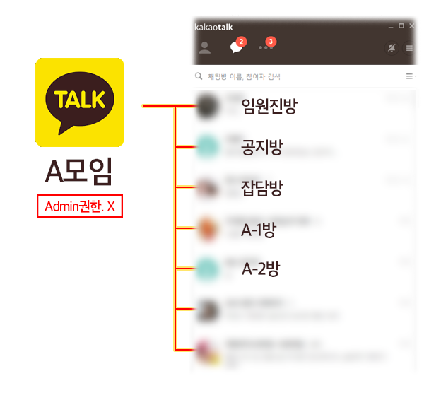
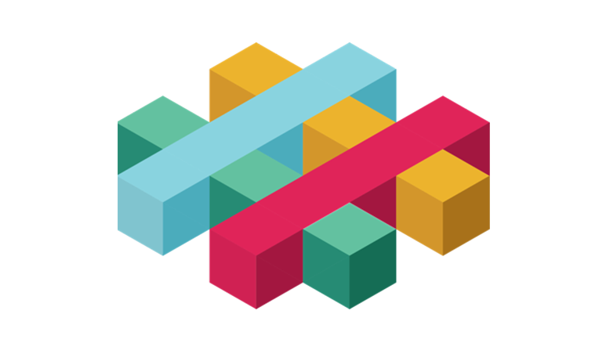
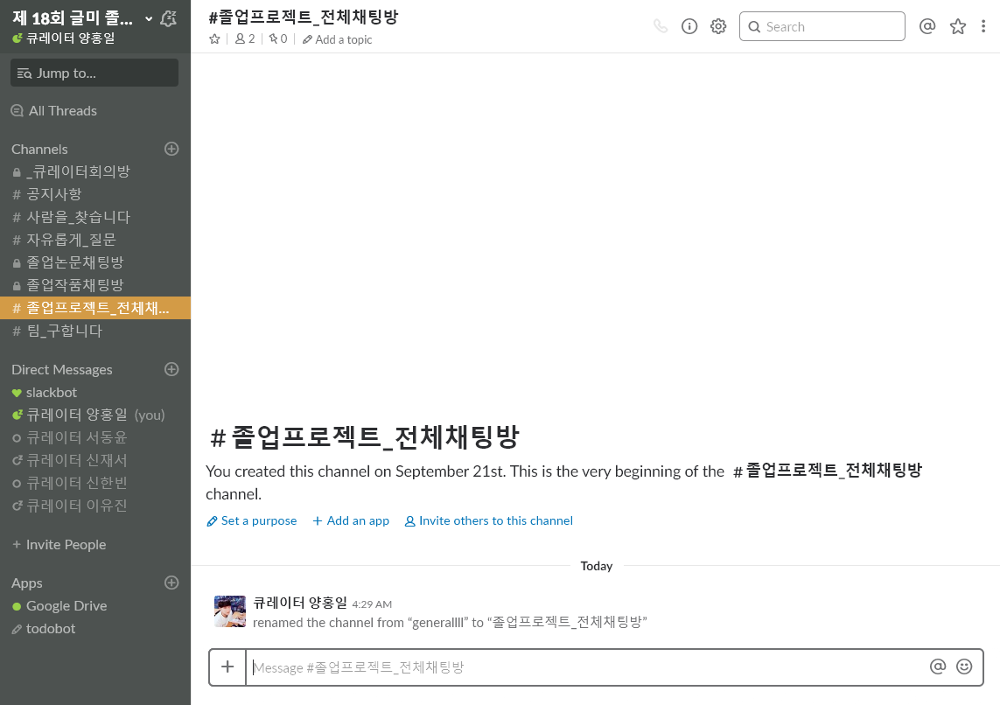
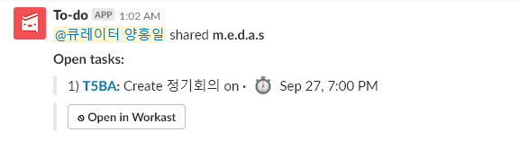
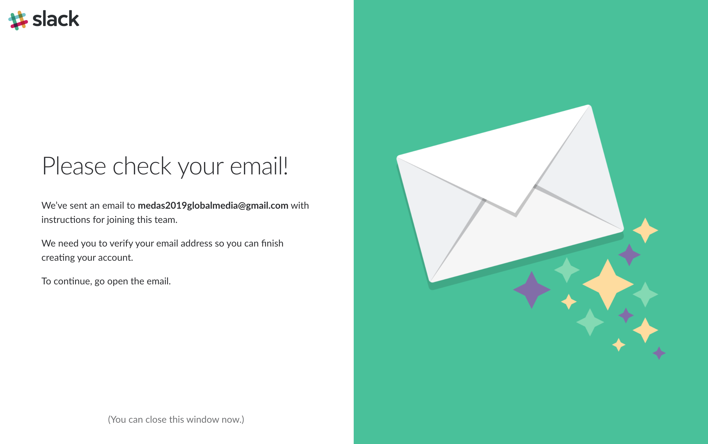
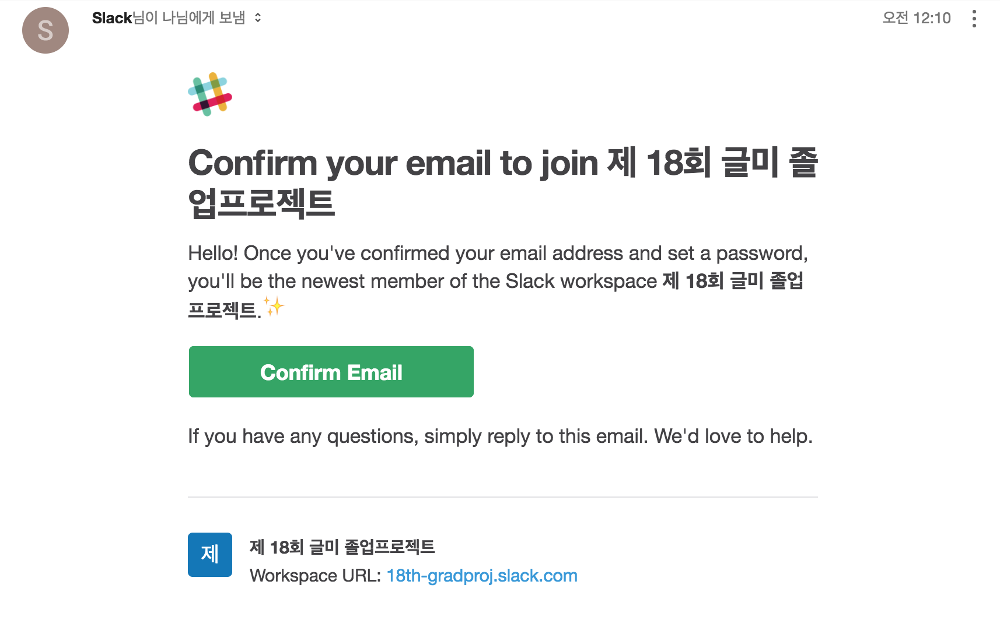
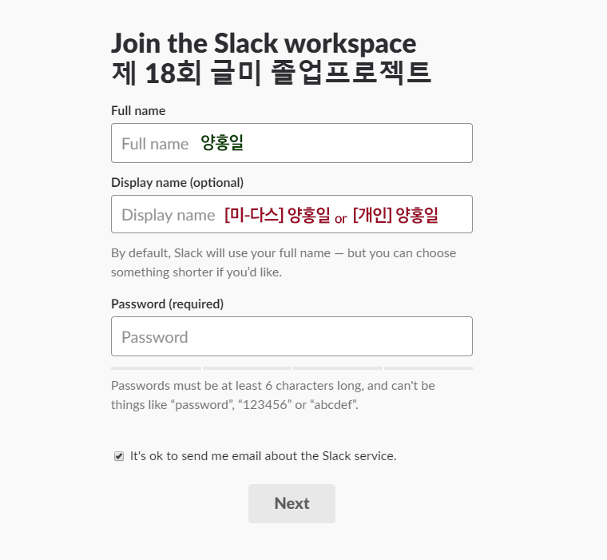
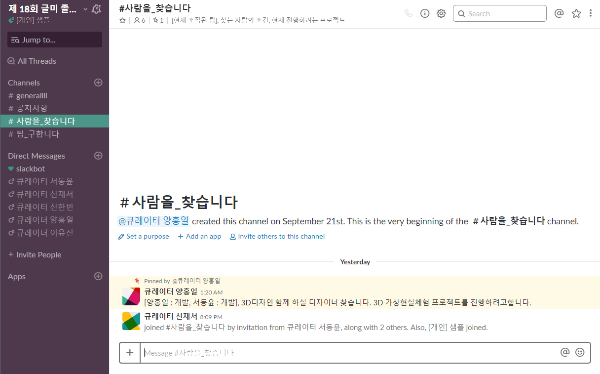
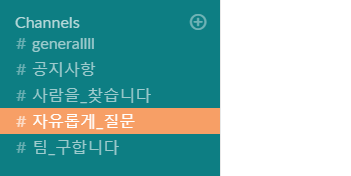

가장 인기있는 채팅 서비스, 카카오톡은
1:1 대화방 혹은 다수 인원이 참가한 대화방에서
각각 대화를 진행하게 됩니다

팀빌딩식에서 공지를 드렸던 것과 같이
앞으로 1년간, 졸업프로젝트 전체 과정에서 "Slack(슬랙)"을 이용합니다

앞으로 1년간, 졸업프로젝트 전체 과정에서 "Slack(슬랙)"을 이용합니다
슬랙을 간단하게 소개하자면 다음과 같습니다
그래서 소모임에서 공지방, 잡담방, 임원진방을
따로 나누어서 관리해야했습니다
따로 나누어서 관리해야했습니다
하지만 오픈채팅방의 기능을 사용하지 않으면 관리자권한이 존재하지않고,

여러 모임에 들어가있는 사용자에게는
수많은 단톡방 지옥에 빠지게 만들었습니다
수많은 단톡방 지옥에 빠지게 만들었습니다
그에 반해 슬랙은 전체 멤버가 가입된 큰 워크스페이스안에,
많은 채널(채팅방)이 존재하여 여러 채팅방을 한꺼번에 관리하되
필요할 때마다 채널에 가입해서 채팅하고, 개인끼리도 채팅할 수 있는
아주 적절한 서비스입니다

많은 채널(채팅방)이 존재하여 여러 채팅방을 한꺼번에 관리하되
필요할 때마다 채널에 가입해서 채팅하고, 개인끼리도 채팅할 수 있는
아주 적절한 서비스입니다
게다가 여러 서비스를 커스텀해서 추가 가능,
즉 플러그인을 쉽게 사용할 수 있습니다
즉 플러그인을 쉽게 사용할 수 있습니다
3가지 장점으로 다시 정리를 해보겠습니다
1.다른 서비스와 분리된 독립적인 환경 =>
네이버 카페, 카카오톡등은 다른 알림에 방해받을 여지가 존재하는 반면,
완전히 독립된 서비스라서 필요한 알림만 받을 수 있습니다
2.실시간으로 연락 가능한 카카오톡등 채팅형 서비스의 이점,
각 게시판별로 따로 이야기할 수 있는 카페류 페이지의 이점을
모두 가지고있습니다
3.공과 사의 구분이라고하죠!
카카오톡은 사적인 대화로 충분한 것 같습니다!
네이버 카페, 카카오톡등은 다른 알림에 방해받을 여지가 존재하는 반면,
완전히 독립된 서비스라서 필요한 알림만 받을 수 있습니다
2.실시간으로 연락 가능한 카카오톡등 채팅형 서비스의 이점,
각 게시판별로 따로 이야기할 수 있는 카페류 페이지의 이점을
모두 가지고있습니다
3.공과 사의 구분이라고하죠!
카카오톡은 사적인 대화로 충분한 것 같습니다!
1년간 전체 프로젝트 관리를 진행할 서비스이오니,
앞으로도 지속적인 관심과 참여를 부탁드립니다
앞으로도 지속적인 관심과 참여를 부탁드립니다
따라서, 졸업프로젝트 대상자 여러분들은
아래 링크로 가입부탁드립니다
아래 링크로 가입부탁드립니다

1.로그인에 사용할 이메일을 넣고 진행합니다

후에는 웹으로도, 데스크탑 앱으로도, 모바일 앱으로도
이용이 가능합니다 2.인증 메일을 받아서 인증을 받습니다

▲ 인증메일은 위와 같이 옵니다

인증을 진행하면 위와 같은 이름과 닉네임을 설정할 수 있는 칸이 나옵니다
팀이 아직 없으신분들은 ' [개인] 이름 ' 을 적어주세요
논문을 진행하시는 분들은 ' [논문] 이름 ' 을 적어주세요
Full name에는 실제 이름을, Display name에는 닉네임을 적을 겁니다
닉네임 형식은 ' [팀이름] 이름 ' 을 적고,팀이 아직 없으신분들은 ' [개인] 이름 ' 을 적어주세요
논문을 진행하시는 분들은 ' [논문] 이름 ' 을 적어주세요
EULA 동의를 거치고나면 슬랙 채팅화면이 나오게됩니다
슬랙봇이 알려주는 팁을 따라가도 좋고, 스킵해도 좋습니다

슬랙봇이 알려주는 팁을 따라가도 좋고, 스킵해도 좋습니다
▲ 브라우저에서도, 데스크탑 어플에서도, 앱에서도 비슷한 화면입니다

공지사항 | 사람을_찾습니다 | 자유롭게_질문 | 팀_구합니다
다소 직설적으로 게시판 제목을 만들어 두었으니,
구분에는 무리가 없을 것으로 보입니다!
슬랙에는 여러 개의 채팅방을 만들 수 있는 것과 별개로
메시지를 보낸 사람을 클릭해서 다이렉트 메시지를 보낼 수 있습니다
직접 컨택하실 때 슬랙을 이용해서 먼저 컨택하시면 됩니다
메시지를 보낸 사람을 클릭해서 다이렉트 메시지를 보낼 수 있습니다
직접 컨택하실 때 슬랙을 이용해서 먼저 컨택하시면 됩니다
가입하시는 대로 새 팀멤버 or 팀을 구하셔야하는 분들은
바로 게시판에 글을 올려주세요!
바로 게시판에 글을 올려주세요!
기타 사항들은 슬랙에 가입하셔서
문의해주시면 바로바로 답변 드리겠습니다!
문의해주시면 바로바로 답변 드리겠습니다!